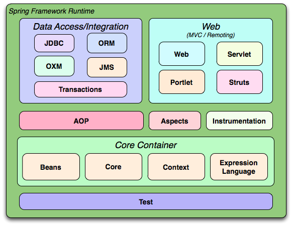

Spring IO
Spring Beans Brief
Created by Kevin Feng
Spring Framework
Spring Framework 3.x
Spring Framework 4.x

Spring Framework Usage
Spring Core
- OLP
- MIF
- TIR
- OCR
- ...
Spring DAO
- OLP
- IR4 use PFW instead
Spring Web
- JAX-RS instead
- SOA
Spring AOP
- OLP
Spring Test
- OLP
- Junit 3/4 directly
Spring Core Container
Beans
Core
Context
SpEL
IoC/DI

IoC/DI
IoC (DI) is a process whereby objects define their dependencies, the container then injects those dependencies when it creates the bean.
Container in Spring: BeanFactory -> ApplicationContext
Application Context
Configuration Metadata:Xml based application context
Annotation based context
Java based context
...
Xml based
ApplicationContext context = new ClassPathXmlApplicationContext("config.xml");
ApplicationContext context = new FileSystemXmlApplicationContext("config.xml");
Annotation Based
@Service
@Scope("prototype")
public class MessagePrinter {
final private MessageService service;
@Autowired
public MessagePrinter(MessageService service) {
this.service = service;
}
public void printMessage() {
count++;
System.out.println(this.service.getMessage());
}
}
@Component
@Repository @Service @Controller
Java based
@Configuration
@ComponentScan(basePackages = "com.oocl.frm.demo.spring.annotated")
public class Application {
@Bean
MessageService mockMessageService() {
return () -> "Hello World!";
}
public static void main(String[] args) {
ApplicationContext context = new AnnotationConfigApplicationContext(Application.class);
MessageService service = context.getBean(MessageService.class);
}
}
Bean Definition
- id
- name
- scope
- constructor
- property
- autowiring mode
- lazy-initialization mode
- initialization method
- destruction method
Example
scope
prototype
singleton
request
session
global session
customized scope
Scope with dependencies?Autowiring
no
byName
byType
constructor
Limitationsinitialization method
Initialization Order@PostConstruct
InitializingBean
init-method
destruction method
Destruction Order@PreDestroy
DisposableBean
destroy-method
depends-on
explicit initialization dependency
Factory
factory-method
factory-bean
Method Injection
Lookup Method
Method Replacement
component-scan
import
place holder
LifeCycle
- Construct
- Aware
- BeanPostProcessor
- Initialization
- Destruction
Context Aware
ApplicationContextAware
BeanNameAware
...
Container injection
BeanPostProcessor
BeanFactoryPostProcessor
Annotation Based
- @Resource
- @Required
- @Autowired
- @Qualifier
Java Based
- @Configuration
- @Bean
- @Import
- @ComponentScan
Util Set & Misc
Collections
v1
v2
v3
Constant
Enum
Pros & Cons
Pros:Dependency Injection
Decouple
etc.
Cons:Exception at runtime
Hard to debug
Use IDE assistance